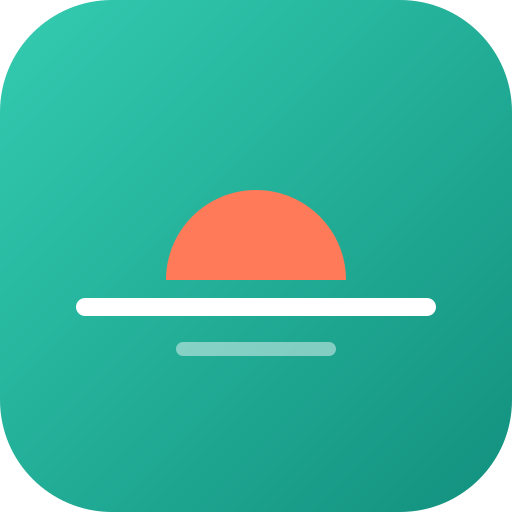

Regla 20-20-20: cada 20 minutos, mira algo a unos 6 metros durante 20 segundos mientras parpadeas despacio. Una vez por hora, además: palmeado.
Paso 1 de 3

Horizonte
Pausas activasErgonomía, movimiento y salud visual para tu jornada.
En iPhone: toca Compartir y luego “Agregar a pantalla de inicio”.
Trabajando
20:00
Tu próxima pausa llegará automáticamente.
Es hora de tu pausa · toca «Empezar» cuando estés listo
Ciclo de pausas
Visual
20s
Movilidad
40s
Activa
5 min
¡Hola de nuevo! ¿Hacemos una pausa rápida o sigues trabajando?
Pausa 1 de 2 de esta alarma
Descanso visual
Descansa la mirada
Mira un punto lejano y relaja la mirada.
Elige tu ejercicio
Enfoca un objeto a 6 metros (20 pies) o más de distancia y parpadea por completo varias veces.
00:20
Te avisamos con un tono al terminar. Puedes continuar antes si quieres.
0 días seguidos
Completa una pausa hoy para empezar tu racha.
0
Pausas completadas
0
Pausas activas
0
Minutos activos
Ajustes Mi horario, colores, sonido y avisos
Mi horario
La app arranca sola al empezar tu jornada, descansa en el almuerzo y se detiene al salir. Fuera de tu horario no te molesta.
Días de trabajo
Jornada
Que se abra sola al prender el computador
Primero instala la app en el computador (botón «Instalar app» o el ícono ⊕ en la barra de direcciones de Chrome o Edge).
Windows (funciona con Chrome y Edge)
- Presiona Windows + R.
- Escribe shell:startup y presiona Enter. Se abre una carpeta.
- Busca el ícono de Horizonte en tu escritorio, haz clic derecho → Copiar.
- En la carpeta que se abrió, clic derecho → Pegar.
Listo: cada vez que enciendas el computador, Horizonte se abre y arranca sola a tu hora de entrada.
Mac
- Abre la app Horizonte.
- En el Dock, clic derecho en su ícono → Opciones → Abrir al iniciar sesión.
En el teléfono
El teléfono no permite que una app se abra sola. Ábrela al llegar al trabajo y arrancará sin que toques nada.
Colores
Sonido de aviso
Notificaciones del sistema
El sonido solo se escucha con la app abierta en pantalla. Si estás en otra app, te avisa la notificación.
Duración personalizada
Elige cada cuántos minutos quieres una pausa. Vuelve a 20 min cada vez que abres la app.
Trabajo
min
Visual (cada alarma)
20 s sugeridos
Movilidad (cada 2ª alarma)
40 s sugeridos
Activa (cada 3ª alarma)
5 min sugeridos
El conteo de cada ejercicio empieza cuando tocas «Empezar». Al terminar suena un tono; tú decides cuándo continuar.
Guía rápida
Cambia de postura y estira con suavidad cuello, hombros, manos, espalda y piernas.
Ponte de pie y muévete: caminar y ejercicios suaves con apoyo.
Hidratación
Ten agua disponible durante la jornada y bebe según tu sed.
Fuentes de los ejercicios
Los ejercicios, tiempos y repeticiones se basan en recomendaciones publicadas por organismos oficiales de salud y seguridad laboral:
- INSST (España) ↗ — Instrucción básica para el trabajador usuario de pantallas: pausas, mirar a lo lejos y palmeado.
- Asociación Americana de Optometría ↗ — Regla 20-20-20 y parpadeo frente a la pantalla.
- CCOHS (Canadá) ↗ — Estiramientos en el puesto de trabajo: cuello, hombros, manos y espalda.
- NHS (Reino Unido) ↗ — Ejercicios sentado y de fuerza ↗.
Son ejercicios generales y suaves. Si tienes una lesión o una condición de salud, consulta antes con tu médico o fisioterapeuta.
Uso responsable
Realiza los movimientos de forma suave y cómoda. Si algún movimiento
causa dolor o molestias, detente. Si tienes movilidad limitada o
riesgo de caídas, elige los ejercicios sentado y apóyate siempre en algo
firme al estar de pie. Esta herramienta no sustituye el consejo de un
profesional sanitario.
Aviso legal y descargo de responsabilidad
Horizonte es una herramienta informativa de bienestar que promueve pausas visuales, de movilidad y activas durante jornadas frente a pantallas. No constituye asesoramiento médico, diagnóstico ni tratamiento de ninguna condición de salud, y no sustituye la consulta con un profesional sanitario cualificado (oftalmólogo, fisioterapeuta, médico ocupacional u otro especialista).
Realiza los ejercicios sugeridos de forma suave y dentro de tu rango de comodidad. Si sientes dolor, mareo, molestia visual persistente o cualquier síntoma inusual, detén la actividad de inmediato y consulta a un profesional de la salud.
El uso de esta aplicación es voluntario y bajo tu propia responsabilidad. No se garantiza que su uso prevenga, alivie o cure ninguna condición médica, y no se asume responsabilidad por lesiones, molestias o daños derivados del uso de esta herramienta o del incumplimiento de las recomendaciones aquí sugeridas.
Privacidad: tus pausas, tu racha y tus ajustes se guardan solo en tu dispositivo. Para mejorar la app se registran estadísticas anónimas de uso (por ejemplo, cuántas pausas se completan), sin cookies y sin datos personales.
Hecho por Korevux ↗